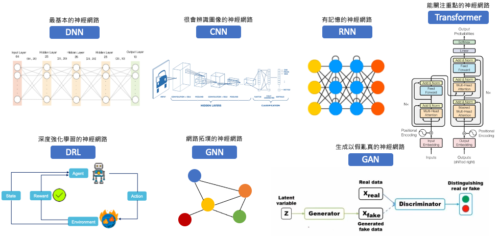

[Day 16] 神經網路的可解釋性：如何理解深度學習中的黑箱模型？
深度神經網路（DNN）以其線性和非線性的複雜轉換而聞名，因為它涵蓋了許多隱藏層。因此即使給定一個訓練有素並能夠良好分類的 DNN，模型內部的推論過程仍然是個未知，這使得 DNN 也被稱為黑盒模型。從今天開始我們將進入深度學習的世界，接下來的內容當中會講解一些熱門的神經網路背後是如何被解釋的。
神經網路的種類

- DNN (Deep Neural Network)：深度神經網路是由多個層次的神經元組成，透過層與層之間的權重全連接進行訊息傳遞。DNN 是一種通用的機器學習模型，用於處理結構化和非結構化數據，如圖像、語音、文字、表格資料等。
- CNN (Convolutional Neural Network)：卷積神經網路主要用於處理圖像和視覺任務。它使用卷積層和池化層來自動擷取和學習圖像中的特徵，從而實現對圖像的高效處理和分類。
- RNN (Recurrent Neural Network)：循環神經網路是一種時間記憶性的深度神經網路，它具有循環的特性，可以處理序列數據，例如語音和文字。
- Transformer：它使用自注意機制來將輸入序列映射到輸出序列。此模型在機器翻譯、文本生成和語言理解等任務上取得了重大突破。並且廣泛應用到其他領域，例如音訊、圖像等任務。
- DRL (Deep Reinforcement Learning)：深度強化學習結合了神經網路和強化學習，用於教導機器學習從環境中學習最佳行動。DRL 在遊戲、自主控制和優化等領域中都有出色的表現。
- GNN (Graph Neural Network)：圖神經網路用於處理圖結構化數據，如社交網絡、分子結構和知識圖譜。它能夠捕捉節點之間的關係，並在圖中進行訊息傳遞和學習。
- GAN (Generative Adversarial Network)：生成對抗網路是一種特殊的結構，由生成器和判別器組成，用於生成逼真的數據樣本。生成器和判別器相互競爭，使生成器能夠逐漸生成越來越逼真的數據，如圖像和音訊。
神經網路的可解釋性
我們可以運用多種方法來解釋深度神經網路的運作，這些方法能夠幫助我們更深入地理解神經網路的運行方式，並解釋模型進行推論的過程。透過從以下幾個角度出發，使我們能夠更深入地探索黑箱模型的內部：
1. 特徵重要性
我們可以從特徵貢獻性評估每個輸入特徵對預測的重要程度，其中先前所介紹的可解釋工具 LIME 和 SHAP 也能拿來解釋各種類型的神經網路，例如： DNN、CNN、RNN、LSTM、GRU 等。
- LIME（Local Interpretable Model-Agnostic Explanations）：使用局部模型來近似解釋單筆模型的預測。
- SHAP（SHapley Additive exPlanations）：基於博弈論的方法，計算每個特徵對於預測的貢獻。
2. 視覺化
我們可以將神經網路的輸出結果視覺化，並觀察神經網路在推論過程中，哪些特徵影響最大。此概念最常被應用在卷積神經網路（CNN）上，因為 CNN 通常會產生許多特徵圖，我們可以將這些特徵圖視覺化，觀察 CNN 對輸入圖像的解釋。另外近期熱門的大型語言模型都是以 Transformer 為架構搭建出來的神經網路，其中內部核心就是由多個 self-attention 所組成。因此在深度學習中的注意力機制（Self-Attention）也與視覺化結合，我們可以將注意力機制視覺化，觀察模型在推論過程中，哪些特徵影響最大。

- 熱圖分析: 將特定層的激發函數值視覺化並繪製熱力圖(Activation heatmap)，顯示模型在每個區域的重要性。例如使用 Grad-CAM 分析模型預測的梯度來視覺化影響模型決策的圖像區域，觀察模型在預測中關注的重要區域。
- 特徵視覺化: 可視化輸入圖像中特定特徵的影響，例如繪製 maxpooling 後的結果。觀察每層所有的特徵，並觀察其對輸入圖像的影響。
- 注意力機制： 我們可以將特徵視覺化與注意力機制結合得到 Attention map。並觀察模型在推論過程中，對輸入圖像、自然語言或訊號進行重要性程度解釋。
3. 對抗性解釋
對抗性樣本是一種修改後的輸入，可以干擾模型的預測。通過分析模型對對抗性樣本的響應，可以觀察模型的弱點和預測結果的不確定性。
- 生成對抗網路（GANs）：使用GANs生成對抗樣本，觀察模型對不同輸入的響應解釋其行為。
明天開始我們就依序的探索深度神經網路的解釋方法。